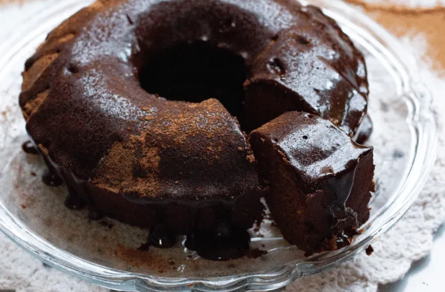

| Tempo de Preparo | Dificuldade | Rendimento |
|---|---|---|
| 40 minutos | Fácil | 10 fatias |
Ingredientes:
- 3 ovos inteiros
- 2 xícaras de farinha de trigo
- 1 xícara de açúcar
- 1 xícara de chocolate em pó ou achocolatado
- 1 colher de sopa de fermento em pó
- 1 xícara de óleo